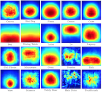

Jordi Pont-Tuset and
Luc Van Gool
Boosting Object Proposals: From Pascal to COCO
International Conference on Computer Vision (ICCV) 2015
[PDF] [BibTex]
@inproceedings{PTVG2015,
author = {Pont-Tuset, J. and Van Gool, L.},
title = {Boosting Object Proposals: From Pascal to COCO},
booktitle = {International Conference on Computer Vision},
year = {2015}
}The benchmark of object proposal techniques is based on the MCG Benchmark toolbox, as described in:
Jordi Pont-Tuset*, Pablo Arbelaez*, Jonathan T. Barron, Ferran Marques, Jitendra Malik
Multiscale Combinatorial Grouping for Image Segmentation and Object Proposal Generation
Pattern Analysis and Machine Intelligence (PAMI), 2016
[Project Page]
[arXiv]
[BibTeX]
@article{PABMM2015,
author = {Pont-Tuset, J. and Arbel\'{a}ez, P. and Barron, J. and Marques, F. and Malik, J.},
title = {Multiscale Combinatorial Grouping for Image Segmentation and Object Proposal Generation},
journal = {Pattern Analysis and Machine Intelligence (PAMI)},
year = {2016}
}
Please cite the corresponding papers if you use the code.
You can also browse the pre-computed results to compare to all the state-of-the-art techniques analyzed in this work.